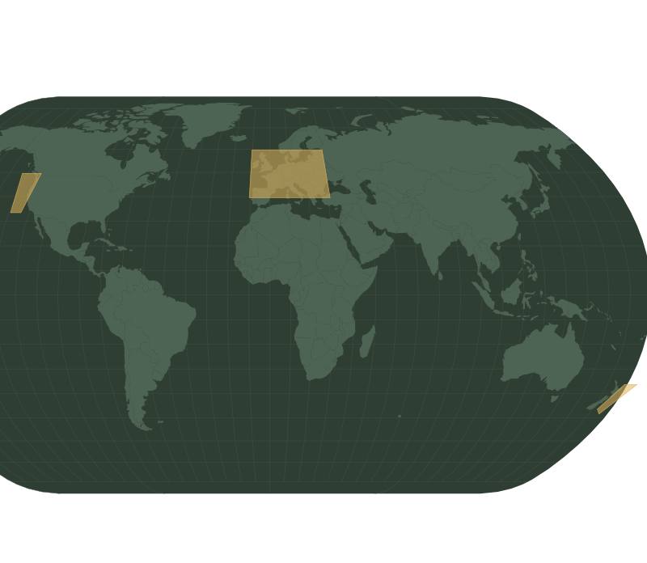

Hongo · Hymenogastráceas · Europa y costa oeste de América
Psilocibe azulado
Psilocybe cyanescens Wakef.
Un hongo cuyo sombrero se ondula al madurar, de ahí el nombre inglés «wavy cap». Crece sobre astillas de madera y mantillo en parques y jardines, y azulea al tocarlo porque la psilocina se oxida. Es conocido por su potencia y se considera una especie psicodélica.123
También se llamapsilocibe azulado · wavy cap · potent psilocybe · caramel-capped psilocybe · Psilocybe cyanescens
- Qué es
- Hongo ondulado que crece sobre madera
- Territorio
- Europa occidental y central, costa oeste de Norteamérica, Nueva Zelanda
- Parte usada
- Cuerpo fructífero
- Principios activos
- Psilocibina y psilocina
- Empieza y dura
- Según un centro de información toxicológica de Canadá: 20–30 min y unas 6–8 h
- Quién guarda su memoria
- Sin tradición indígena documentada en las fuentes consultadas
Botánica
El hongo de las astillas
Psilocybe cyanescens tiene un sombrero higrófano de color caramelo a castaño cuando está húmedo, que se aclara a un tono pajizo al secarse.3 Mide de 1,5 a 5 cm y es claramente ondulado en la madurez.2
Crece hoy sobre todo en astillas de madera, en los bordes de parterres con mantillo de zonas urbanas, y en otros sustratos ricos en lignina.2
Suele fructificar en grupos o racimos.2 Se han llegado a contar más de 100 000 ejemplares en un solo parche de un hipódromo inglés.4
Pertenece al llamado «complejo P. cyanescens» o «caramel-cap»; entre sus parientes, P. allenii (descrita en 2012), P. azurescens, P. subaeruginosa y P. weraroa.235
Esta ficha no es una guía de identificación; en la misma zona crecen hongos muy tóxicos.
- Familia
- Hymenogastráceas
- Sombrero
- 1,5–5 cm, ondulado
- Esporada
- Castaño negruzca a púrpura
- Hábitat
- Astillas de madera, mantillo
Memoria y tradición
Un hongo de ciudad
Las fuentes consultadas no recogen un uso tradicional indígena de esta especie, a diferencia de los Psilocybe de México.
Se considera de los psilocibes de madera más conocidos y recolectados; prospera en camas de mantillo.5
En el tiempo
Sus nombres
- wavy cap
- inglés
- potent psilocybe
- inglés
- caramel-capped psilocybe
- inglés
No debe confundirse con Panaeolus cyanescens (Copelandia): ambos se abrevian P. cyanescens.6
Territorio y cuidado
Entre Europa y la costa oeste

En Estados Unidos aparece sobre todo en el noroeste del Pacífico, hasta el área de la bahía de San Francisco; también en Nueva Zelanda, Europa occidental y central y partes del oeste de Asia (Irán).1
Probablemente fue introducida en Europa, donde aparece sobre todo en cementerios, jardines botánicos y parques urbanos.7
En Canadá se da sobre todo en la zona de Vancouver y en la costa occidental, del sur de Columbia Británica al sur de California.8
Qué ayuda
- No recolectarlo sin un experto local.
- Cuidar los jardines y parques donde crece.
- No mezclarlo con otros hongos.
Qué contiene
Psilocibina y psilocina
Los compuestos responsables de sus efectos psicodélicos son la psilocibina y la psilocina.1
La psilocibina se convierte en psilocina por acción enzimática en las zonas dañadas, y la psilocina al oxidarse produce el azuleo, de modo que incluso ejemplares con poca psilocina suelen azulear.32
Muestras recogidas en la República Checa mostraron niveles de psilocibina mucho más altos que otras de Europa, según una fuente divulgativa.9
Principal compuesto; se convierte en psilocina.[1][3]
Compuesto activo y responsable del azuleo al oxidarse.[2]
La experiencia
Tiempos descritos
Un centro de información toxicológica de Canadá describe la aparición de síntomas entre 20 y 30 minutos tras la ingestión, con una duración habitual de 6 a 8 horas, y apunta que los niños y los perros pueden tener reacciones más graves.8
Una fuente divulgativa menciona parálisis muscular temporal asociada a esta especie.9
Esquema orientativo: cambia con la preparación, la cantidad y la persona.
Investigación
Qué se ha estudiado
Se han hecho análisis de potencia de ejemplares del noroeste del Pacífico y de Europa.9
La investigación clínica con psilocibina se refiere sobre todo al compuesto, no a esta especie.
Alcance de estos datosAnálisis de contenido; sin ensayos clínicos propios.
Con cuidado
Lo que conviene saber antes
Para seguir
Libros y medicinas emparentadas
Otro hongo azulado de nombre parecido.
Otro Psilocybe.
Fuentes
De dónde sale cada dato
- Wikipedia. Psilocybe cyanescens. wikipedia.org/wiki/Psilocybe_cyanescens.
- Wikipedia. Psilocybe cyanescens (descripción y hábitat). wikipedia.com/wiki/Psilocybe_cyanescens.
- GBIF. Psilocybe cyanescens Wakefield. gbif.org/species/144094046.
- Wikiwand. Psilocybe cyanescens. wikiwand.com/en/articles/Psilocybe_cyanescens.
- Double Blind Mag. Psilocybe cyanescens: A Mycologist's Guide to Wavy Caps. doubleblindmag.com/psilocybe-cyanescens/.
- Double Blind Mag. Blue meanies (Panaeolus cyanescens). doubleblindmag.com/blue-meanies-mushrooms-panaeolus-cyanescens/.
- ChemEurope. Wavy cap. chemeurope.com/en/encyclopedia/Wavy_cap.html.
- Beaty Biodiversity Museum (UBC). Psilocybe cyanescens — Wavy caps. explore.beatymuseum.ubc.ca/mushroomsup/P_cyanescens.html.
- Tripsitter. The Dark Truth About Wavy Cap Mushrooms. tripsitter.substack.com/p/psilocybe-cyanescens.
- Mapa APDER, con datos de Natural Earth · dominio público
- Dibujos de moléculas APDER
Última revisión: 24 de noviembre de 2026. Si ves un error, escríbenos a info@apder.org.